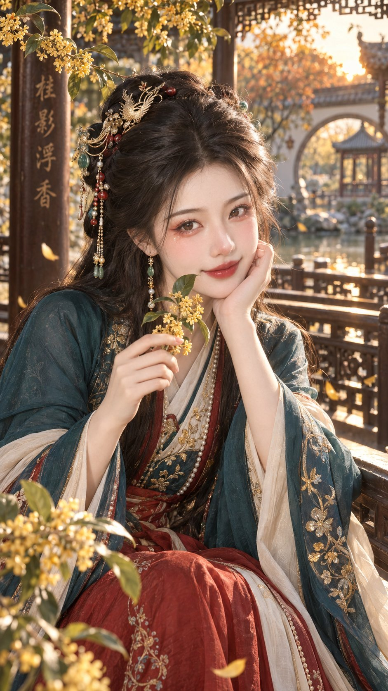

提示词即画笔 · PROMPT AS BRUSH
这个画廊只收发布在 X 上的作品——GPT image 的提示词库， 玩的是同一件事：把脑子里那张图，用语言尽可能精确地描述出来。
每幅作品都保留它在 X 上的原帖链接，方便回到帖子看完整的发布语境； 提示词取到的就全文公开、方便复制，暂时没取到的会如实标注，不编造。
新作品与创作动态会先发布在 X。欢迎关注，也欢迎从那里继续交流 AI 绘画与提示词。

暂无提示词——这幅作品的提示词暂未收录，取到后会在这里全文公开。